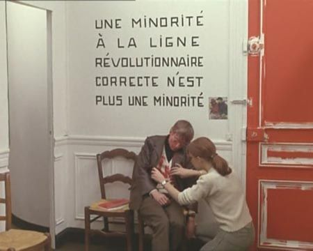
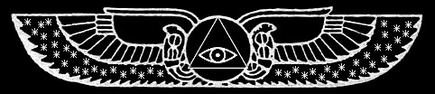

|
Iniciación: la producción de lo Imposible
Autor : yemeth
|
v1.1
Introducción
En este artículo se trata acerca de un mecanismo a menudo conocido con el nombre de "Iniciación" en la tradición esotérica occidental. Se explican mecanismos con los cuales podrían abrirse sus puertas, y se describe aquello que, quizá, encontrarás allí. La perspectiva que ofrezco está necesariamente limitada. A estas alturas sería algo atrevido afirmar que existe algo así como un camino iniciático. Dada la naturaleza de aquello que comentaré en este texto, habría más bien que reformularlo:
En pocas palabras, si es que a estas alturas tiene algún sentido proclamar que "existe un camino", aunque siempre sea esto limitado por mi necesariamente limitada perspectiva como autor,... o quizá más bien: si hay una forma de salirse del camino, entonces, esta es una forma de des-encontrarlo.
El poder necesita de responsabilidad, pero la era de las pequeñas élites ocultas ya pasaron. Las armas han de ser para el pueblo, para que pueda volver a sacudirse el polvo y las cadenas, y rugir con la fuerza que ya sabemos que posee.
El Arte es una misión suprema, y requiere Fanatismo.
Y allá donde haya fuego, llevaremos gasolina.

¡Esto no es punki! ¡Esto es muy jebi! ¡Te han visto en el McDonalds bebiéndote una Pepsi!
Tienes a las patrias por cosas artificiales con poco sentido, y a las banderas por trapos de colores. Te importa poco el desarrollo de tu "carrera profesional", y no tienes mucha prisa por formar una familia de ningún tipo, es más, piensas que probablemente no lo hagas nunca. Quizá hayas pensado en una comuna. Has leído a unos cuantos autores de corrientes "alternativas", incluso de vez en cuando encuentras un buen momento para decir "fnord". Te lamentas por quienes siguen los dictados de los religiosos, y en general por quienes siguen cualquier dogma. Te das cuenta de que la gente que parecía tan feliz por ser "ignorante", con los años va cargando más y más mierda sobre las espaldas y rindiendo su alma al amo, sumergiéndose en un estado de depresión cada vez más profunda: te encuentras con que merecía la pena rebelarse, aunque toda la mierda siga ahí y parezca continuar intentando arrancarte el corazón y arrastrarte al barro para que acabes tu vida encerrada con el resto de los zombies (¡cuidado! ¡eso siempre puede suceder!). Esto del "decondicionamiento" podría ser tu segunda piel, ya has dejado atrás más de una identidad, rasgos de personalidad, aprendizajes, y ataduras. En fin, qué ostias, que estás hecha toda una punki, ¡y olé!.
Pues enhorabuena, y buenas (o malas noticias): hay más. Hay mucho más. Hay tanto que ver y hay tanta cadena que romper, que te podrías tirar la vida. ¡No hay que dormirse nunca en los laureles, se requiere vigilancia permanente para no caer otra vez!
¿Has acabado con una buena parte del policía que habita en tu cabeza, de las reglas, de las cadenas de condicionamientos que te atan?
¡Genial!
Los siguientes pasos pueden resultar incluso más duros o peligrosos, pero ¡hey!, no tienes por qué seguir adelante. Podrías perder la cabeza y cosas así. Requiere esfuerzo, dedicación, firmeza, sentido del humor, honestidad y un corazón que si no es "puro" como dirían los cuentos infantiles (para atravesar extraños umbrales protegidos por temibles guardianes, por ejemplo), pretenda al menos refinarse. El riesgo de locura es realmente serio, porque ahora se trata de romper incluso los fundamentos de la razón y la lógica (recuerda respirar...), para ir más allá de sus límites. De hecho, el primer paso podría consistir en dar el salto más allá de lo racional. Nadie es más guay por ello, y puedes realizar una labor cojonuda sin meterte en estos fregaos (lo importante no son tus putas medallitas), así que antes de seguir adelante o saltar a algún abismito, estaría bien que te lo pensaras: ¿qué te impulsa? ¿por qué quieres ver hasta dónde llega la madriguera del conejo? ¿qué buscas?...
Pero ten en cuenta también, que si te conformas y no das los "pasos siguientes" no es difícil que se frene tu impulso y que la mugre consiga tirar de tí a una vida cada vez más gris. Apagándote, llenándote de cinismo y "vejez", y regresando de nuevo -incluso sutilmente, sin que te des cuenta, disfrazándolo de 'madurez' o 'experiencia' o quién sabe qué- a la tribu de los zombies. ¡Tonterías! ¡El adulto es sólo el que se ha dejado transformar de niño a imbécil!
Estos "pasos siguientes", podrían consistir también en derribar lo aprendido, pero a otros niveles más allá de los juegos de ideas. No se trata sólo de las mentiras que metieron en tu cabeza educándote, de Dios y tu puta Patria y toda esa bazofia que ya es demasiado burda como para engañarte. Se trata de las estructuras más básicas de la percepción, de las reglas con las que piensas que funciona la realidad, categorías tan básicas en tu cabeza como lo que (im)pone la separación entre lo que eres "tú" y lo que es "otra cosa".
Hay gente que ha encontrado métodos para hacer esto (y algunas otras cosas) de forma sistemática. A lo largo de la historia han recibido muchos nombres, bien sea chamanes, magos, o místicos, cada uno con su sesgo. Hay lugares en los que al que se veía a la legua que era un poco 'bicho raro', se lo llevaban con el chamán para ser entrenado. Lo primero que hacía era aislarse de la realidad cultural de su tribu, para poder deconstruirla desde fuera. Así, podía manipular esa realidad cultural desde una perspectiva privilegiada e intentar llevarla a un lugar mejor, al mismo tiempo que explorar "otras realidades". Diseñadores de cultura y de nuevos condicionamientos más útiles para los suyos, deshaciendo primero los heredados. ¡Algo que hace más fácilmente alguien que de por sí no encaja!. Y como método, los precedentes chamánicos de la magia, el acceso a estados alterados de consciencia. La manipulación de lo Real mediante medios no-ordinarios.
Y algunos estais pensando,... ¡¿Magia?!. ¡Pero si eso no existe!
¡Magufo! ¡Crédulo!
¡Crees en tonterías! ¡Demuéstralas!
La cosa es que va al revés. Estas cosas son el opuesto de las creencias, y cuanto más profundizas, menos cosas que te crees. No se trata de añadir malditas creencias ni de meterte en una secta, sino de salir de la secta en la que estás, esa secta de la normalidad que de ser tan normal apenas se la ve, porque casi toda la gente con la que hablas está metido en ella.
Otro problema que te puedes encontrar es que en la actualidad no hay un "rol social aceptado" para el tipo de gente "rara" que adquiere tales perspectivas "extrañas" sobre su cultura. Es difícil la dedicación completa.
Pero que vaya, que no se trata de creer en nada, sino de trascender la estructura mental que te hace creer en las cosas. Utilizar la creencia como una herramienta, según te convenga. El monoteísmo no es algo que se aplique sólo a creer en el Dios de los cristianos, sino que lo sueles ejercer cuando tienes algún otro dogma a otros niveles como el ideológico. La creencia sin control te hace esclavo de aquello en lo que crees. Pero por otro lado, si pudieras tener la creencia en tus manos,...
Y por eso tanto rollo de des-programación, de de-condicionamiento, y demás.
Cuando caes en algún tipo de secta de esas que la sociedad normal llama "destructivas", pongamos por ejemplo que te metiste en los Cristianos Evangélicos del Muñón Sanguiforme de Cristo Rey o en el Centro de Estudios Antropológicos de la Liberación OVNI, pues la forma de sacarte los que te devuelven a la sociedad normal, lo llaman des-programarte. Es decir, lo que hacen es des-enseñarte los dogmas que te colaron en la "secta" y que aceptaste como reales. El problema es que luego tratarán (aunque probablemente sin mala intención) de re-programarte de nuevo para que entres en su secta, aunque de forma todavía más astuta. Como es la secta de los "normales", la de la sociedad "normal", pues parece que no es una secta. Vamos, que te "reinsertan" en sociedad. ¡Yonkis, dejad de preocuparos por la heroína y venid al redil a preocuparos por la hipoteca!. Es lo mismo que sucede cuando la Iglesia Católica llama sectas a otros grupos religiosos, pero se da a sí misma estátus de religión. "Hijo mío, menos mal que ya no formas parte del Muñón Sanguiforme, que negaban una verdad tan confirmada por la experiencia del hombre común como que Cristo resucitase a los tres días después de que su Padre borracho decidiera sacrificarle..."
Habitualmente, como comenta el camarada monodelespacio acerca de esa secta, "todo amigo, todo familiar o enemigo no es otra cosa que un adepto". Cosa que no implica, ni mucho menos, que eso lo haya de convertir en adversario ni en alimento de 'vampiros' inmaduros.
A lo que voy. La forma de la que intento hablar un poco en este texto, contando algunas cosas que he visto y las conjeturas que tengo al respecto (porque se trata esencialmente de experiencia personal, libros, y mucha mucha práctica), tiene que ver con el camino "místico/mágico" en su versión occidental y más concretamente en las ramas europeas (aunque en un mundo como este, todo es influído y enriquecido por todo). Y no porque a la europea sea mejor necesariamente, sino porque "Magia" es el camino que a mi manera recorro y del que me siento capaz de hablar, y si puedo decir algo es que por lo menos, funciona. Lo mejor que tiene a estas alturas y por el modo en que ha evolucionado esta "Magia", es que no tenemos que andarnos con referencias veladas y oscuras, ni siguiendo supuestas pistas ocultas muy "espiritualmente" adornadas que al final están tan vacías como los loros que las repiten. Los balbuceos oscurantistas y la vaguedad en estas cuestiones no suelen ser signos de profundidad, sino un mecanismo para engalanar de pretensión la ignorancia. ¡Hay tantos que sólo gustan de buscarse alhajas que deslumbren al resto!
Por suerte, las "clases medias y populares" tenemos en los albores del Siglo XXI suficiente educación como para desarrollar una perspectiva crítica sobre las cosas. Esa es una de las grandes conquistas que debemos a nuestros predecesores, y un importante peldaño para la emancipación de nuestras mentes ante sacerdotes y gurús, patriotas y creyentes, inquisidores y poderosos.
Acoge sonriente la Magia al sentido crítico, a la filosofía, y a esos métodos de la ciencia que una investigación lo bastante profunda revela que ella misma parió.
De eso se trata, y de que por el camino vayamos investigando y redefiniendo. Que hagamos conjeturas, que las compartamos. No se trata de perder libertad personal sino al contrario, consiste en emancipar nuestras mentes en la medida de lo posible.
Lamentablemente, muchos "ambientes" que envuelven la imágen típica de todo esto, son desoladores. Todo un rollo magufete "Nueva Era" (donde hasta hace no mucho se miraba la propia tradición mágica occidental con sospecha, por cierto) un tanto inoperante y repleto de prácticas que son más bien "calmantes" para que te sientas agusto y de buen rollito: búsqueda de la comodidad y una caricia en el lomo, unido a cierto orientalismo superficial, una ridícula credulidad absoluta ante cualquier cosa que vaya desde la aromaterapia a la numerología (sostenida sobre un tácito "si tu crees en lo mío yo creo en lo tuyo"), y frases sentenciosas ora oscuras ora superficiales habitualmente copiadas de señores que venden muchos libros, o acumuladas por maestrillos que montan carísimos cursos y que guardan como Gollum sus preciosssas parcelas de sabiduría para poder vivir del cuento.
Las nuevas generaciones de exploradores de la mente tendremos que decidir si seguimos dando y tomando cursos por dinero y departiendo con sabidurías interesadamente ocultas, o si rompemos la baraja, tiramos abajo el mercadeo en el Templo, y conseguimos sacar de dentro de nosotros el tipo de hermanamiento revolucionario cooperador que cambie las cosas en serio, más allá de encender jodidas velitas del buenrollismo mientras pensamos que ya hacemos suficiente con usar bolsas de papel en lugar de plástico.
El potencial que tiene todo esto es mucho mayor que malditas aspirinas para soportar la explotación y el vacío existencial.
Es el mundo en nuestras manos.
Literalmente.
En la primera gran crisis del capitalismo en el Siglo XXI, contexto en el que escribo este texto, parece bastante posible que las cosas se vayan a la mierda o que nos estrujen más a los trabajadores: así, puede ser un buen momento (bah, ¿y cuándo no fue un buen momento?) para repartir armas al pueblo y dejarnos de tonterías.
Cambio revolucionario, sí. Pero, ¿cómo?.
Volvamos de nuevo a eso de la forma en que se comporta la realidad, de cómo deconstruirla y cómo hacerlo para nuestro beneficio.
Un niño, unas cadenas,... y la Iniciación.
Las cosas que me apetece contar después de esta introducción, parten por completo de mi experiencia. Hay muchas más formas de hacer las cosas, y la mía podría no tener nada que ver con la tuya, así que incluso si generalizo en mi forma de hablar, no pretendo tener Verdad alguna sobre el Cómo. Sólo pienso que hay algunos puntos en común en caminos que por lo demás son bastante dispares. Si utilizo autores para apoyar mis afirmaciones, es porque considero que utilizar variedad de opiniones y metáforas son un gran método para coger perspectiva sobre asuntos que no se pueden describir con términos exactos. Cuanto menos dogma mejor; el dogma es malo para las neuronas, y corre el riesgo de romperse cuando se encuentra la pieza del puzzle adecuada (sí, justo esa que no encaja ni a golpes).
En primer lugar, una revisión rápida de qué pasa, de cómo hemos llegado hasta ese momento cuando -más o menos- hemos completado el rito de paso a una edad cuasiadulta en la secta de los "normales".
Un buen día nacimos, para ir desarrollándonos y dar nuestros primeros pasitos. Y algo muy importante que aprendimos a hacer fue dividir nuestras percepciones entre "fuera" y "dentro". Al principio todo era lo mismo, percepción indiferenciada, pero por motivos que no vienen al caso decidimos considerar como "dentro" a lo que parecía ser constante en nuestra percepción. Y así nuestro cerebro trazó la frontera entre "dentro" y "fuera", creando ese "fuera" que al principio en muchos casos quizá eran sobre todo "mamá" y "papá". Esto dio pie al terremoto más tremendo. ¿Fuera?. ¡No controlo ese fuera! ¡Se mueve sólo! ¿Qué demonios quiere? ¡Es una cosa horrible y caótica! ¿Qué desea de mí?
¿Qué puedo hacer para controlarlo?
La solución que le damos los humanos sometidos por el yugo totalitario del sistema y de su Ley, que conoce muy bien nuestra ansiedad ante la sensación de no controlar nada, consiste en atar ese caos. Reglas, reglas y más reglas. El niño es introducido en sociedad, y se va calmando al entender que ese aparente desorden exterior sigue unas reglas que parecen coherentes. La gente se comporta siguiendo ciertos patrones predefinidos, y bueno, tu imagen en un espejo no es más que eso, tú en el espejo, y en los semáforos nadie debería atropellarte cuando está en verde, y en general todo está atado y bien atado. Es tranquilizador, ¿verdad?. Así crecemos. La policía coge a los malos y los jueces hacen justicia, y los gobernantes organizan la sociedad, y Dios pone orden en los cielos, y los banqueros,...
...los banqueros son unos hijos de puta.
Y claro, con suerte llega un día en el que empiezas a cuestionar la gran mentira que es todo esto. Y que todas esas cosas tan tranquilizadoras, las están aprovechando unos pocos que ocupan las clases superiores para tenerte bien atado A TÍ, y están inventándose y haciéndote creer toda esa mierda sobre Dios, y los gobernantes, y los banqueros. Si lo ves lo habitual es que te rebeles, y te puede deprimir y hasta sorprender la de gente que sigue tan tranquila manteniéndose recta formando en la línea y tragando, pero allá que vas.
El problema es que a esas alturas, aunque consigas horadar la jaula, se ha cerrado mucho más de lo que te puedas imaginar. Toda tu mente, hasta la forma en que percibes, está secuestrada y bien amarrada por el nudo que ata y sostiene junta todo lo que llamas "realidad". Que se rompa a estas alturas es peligroso. Puedes debilitarla empujando y empujando, pero una ruptura total te podría dejar salvajemente desorientado, lo suficiente como para acabar en un psiquiátrico. ¡Va en serio!. Cuando quiero decir ruptura, no quiero decir "podría hacerte cuestionar cosas de tu vida, como por qué estás trabajando en esa fábrica de mierda con una hipoteca a 50 años pagándole por nada a un cerdo banquero". No. Se trata de algo que actúa a un nivel más profundo, más básico, aunque también sea parte de ello lo del cerdo al que pagas la hipoteca. Es más bien, "podría hacerte cuestionar si estás vivo o muerto, qué coño esestar vivo o muerto, o plantearte seriamente si vives en Matrix y esto es una simulación, cagarte de miedo por la posibilidad de romper los parámetros de la simulación, o si hay un maldito Dios o Dioses que están jugando contigo, porque TODO lo que crees que sabes es una ficción,.. y podría hacerte buscar pistas sobre qué coño está pasando mientras tu mente intenta aferrarse aterrorizada a cualquier explicación que le proporcione aquello que tenga más a mano". Quiero decir, cuando el nudo se rompe de verdad, todo en lo que piensas que consiste lo real se va a tomar por culo. Todo.
Hacia allá vamos. Como decía Hermann Hesse en su Lobo Estepario, "¡Teatro sólo para locos! ¡Precio de admisión, tu mente!".
Una clave importante está en lo paradójico, en lo imposible. Cuando lo imposible sucede, todas las reglas revientan. Te das cuenta entre espasmos de terror de que no sabes absolutamente nada.
Hay muchas formas de generar lo imposible. En el extremo más relajado, tomándotelo con calma, podrías escoger un tranquilo lugar en la montaña donde un Maestro te plantease acertijos aparentemente absurdos: "esta oración es falsa", te dice. Lo piensas y lo piensas, ¿qué quiso decir?. Y veinte años después lo pillas, ¡Eh! ¡Era eso! ¡Gracias Maestro! ¡Ya puedo pensar en lo contradictorio!. Vas ahí, pelando la cebolla capa por capa, poco a poco, descubriendo reglas y condicionamientos. Una versión novelada la tienes con los libros de Castaneda, cuyo brujo-maestro Don Juan se mosquea cuando su alumno Castaneda está apunto de "conseguirlo" y mete la pata: había visto unas formas que parecían ser una especie de espíritu o algo así, y en lugar de alucinar con ello, resulta que Castaneda se mueve para verlo mejor y al cambiar el ángulo de visión se da cuenta de que en realidad las formas raras no eran más que nubes y que no se trataba de nada tan imposible (y claro, Don Juan le reprende por romper el hechizo).
Todo esto, podría ser demasiado lento. Derrumbar tus condicionamientos regla a regla podría llevarte eras. Pero por otro lado, lo imposible,... lo radicalmente imposible puede hacer que todo se derrumbe de una sóla vez (aunque quizá te reviente en la cara, o aunque al reconstruirlo la jaula emerja de nuevo... pero esta vez todo será distinto. Quizá. Si sigues andando).
La forma de llevar esto a cabo en la Magia propia de occidente, al menos en lo que respecta a la "Iniciación" que abre las puertas de lo irracional, podría consistir en lo siguiente: uno produce un suceso en el mundo observable, exterior, que es radicalmente imposible. No misterioso, ni "difícil de explicar", ni "sobrenatural" ni "paranormal" ni "que lo analice Íker Jiménez". Hablamos de algo radicalmente imposible, tanto que te podrías tirar el resto de tu vida preguntándote qué coño fue todo aquello, si no fuera porque puedes seguir delante y todavía hay más, oh sí amigas, hay muchísimo más.

La producción de lo imposible.
¿Qué tengo que hacer, qué tengo que hacer para despertarte,
para agitarte, para romper la estructura?
[Rage Against the Machine - Wake Up]
El camino "místico" clásico de mecanismos como la "Magia" en occidente, podría funcionar así: producimos lo imposible, y luego buscamos cómo arreglárnoslas con ello. Tenemos un cierto rango en el que operar y con el que podemos ser más o menos cautos (e intentaré dar algunos consejos al respecto que creo relevantes), pero, siempre de por medio el sesgo de mi experiencia personal, existe cierto riesgo inevitable asociado. Una posibilidad es que esto se deba a que los occidentales solemos ser demasiado racionales y necesitamos que nos den caña para sacudirnos ese polvo. Por otro lado, también es posible que vaya con el carácter de una serie de culturas responsables de extremos que van desde los tremebundos campos de exterminio nazis a los más altos esfuerzos conocidos por la emancipación social humana en diversas revoluciones como la francesa o la rusa.
Lo importante es en cualquier caso, que la inconsistencia es algo que se genera dentro de aquello que vulgarmente llamamos "realidad"; justo en ese mundo que tenemos reglado y muy ordenado para que no nos de sustos comportándose de formas inesperadas.
Pondré un ejemplo ilustrativo sobre qué podría ser eso de producir lo imposible.
Estás frente al espejo. Todo se comporta según lo planeado. Mueves un brazo y tu reflejo lo mueve. Sonríes, y tu reflejo te imita. Todo normal.
Pero de repente, tu reflejo sonríe cuando no debe con una mueca burlona.
¡Bum!. Terror. Sientes un miedo profundísimo que parece detener el tiempo. ¿Está vivo? ¿Es independiente? Joder, no estoy soñando. ¿Qué demonios es esto? ¡Las imágenes reflejadas en los espejos no deberían de poder moverse!
Pero se ha movido, y eso es aterrador. Ahora bien,... ¿por qué es aterrador?
No se trata de que esa cosa te vaya a atacar, o a devorar, o que estés en el infierno y por eso la maldita figura te esté sonriendo porque vaya a empezar tu castigo (aunque en una situación como esa probablemente se te pasaría por la cabeza). Ni siquiera es que estés loco, aunque eso también sea aterrador. No. Lo que realmente te aterroriza en una situación así, es que no tienes ni puñetera idea de por qué se ha movido. ¡Es más, es que es imposible que esa cosa se mueva!. Se trata de que las imágenes de los espejos no se mueven, está terminantemente prohibido que lo hagan por reglas que consideramos inviolables. Así que si lo hace, ninguna de las otras reglas vale, y nada de lo que crees que sabes acerca de la realidad sirve para nada. Ante eso sólo hay confusión. Allí, nada es verdad, y todo está permitido. Y eso es lo que más nos aterroriza.
Así que tu mente puede dedicarse a hacer cábalas como que te encuentres en el infierno y que vaya a comenzar tu castigo, recurriendo para esa hipótesis a lo que cree que sabe y a lo que está percibiendo. Tu pensamiento asociativo se desata con tal libertad que el psicólogo llamaría "delirios" a lo que piensas, porque eso que piensas no respeta ninguna de las cosas consensuadas por la gente normal acerca de qué es la realidad. Pero claro, tú tampoco tienes mucha culpa, porque ha sucedido en serio algo que tampoco está entre lo que se considera posible por la gente normal. En una situación así desaparece todo eso que nos tranquiliza a las personas, el fino tejido que te oculta lo que hay más allá del nudo en torno a eso que desde que somos pequeños intentamos atar y asfixiar para poder controlarlo. ¡Delirio desatado! ¿Estoy soñando? ¿Estoy en el infierno? ¿Estoy loco? ¿Estoy muerto?
Antes escribí acerca de cómo hicimos la división siendo pequeñitos entre "Yo" y "Otra cosa". Dije también que tal división de lo percibido creaba una angustia tan tremenda a "Yo" por la falta de control sobre "Otro", que se ponía a atar ese "Otro" con reglas, leyes,autoridades, y que todo estuviera en su sitio. Bueno, pues esto de producir lo imposible, lo que hace es desatar ese nudo y devolvernos al estado anterior, volviendo sobre nuestros pasos.
Y en ese momento, no sabes qué es la realidad. No sabes absolutamente nada.
Esa confusión, siempre aterradora cuando su abismo se cierra sobre tí, guarda también la clave de la libertad. No hay tiranía en el estado de la confusión, como dicen los discordianos, pero eso no es tan evidente cuando estás cagándote de miedo. En un momento así lo que querrías es si acaso apedrear al listillo que dijo que no hay tiranía en el estado de la confusión.
A este estado en el que uno construye frenéticamente realidades que suplen la recién derrumbada en un océano de terror cognitivo, el clásico del psicoanálisis Jacques Lacan lo estudió como psicosis. Otra gente como Robert Anton Wilson lo llamó con inspiración artúrica Peligrosa Capilla, que suena más chulo. Rudolf Steiner dijo que te enfrentabas al Guardián Menor del Umbral, y Aleister Crowley lo consideró el "abismo más externo", aquello que desembocaría en tu "Ordeal X".
La clave de todo esto, está en el inconsciente. Y como tirarse de cabeza a la psicosis no parece el mejor método de sortear el psiquiátrico, será mejor que echemos un vistazo y veamos qué se puede hacer para no acabar en manos de los demonios de bata blanca y armas de electroshock +5, a los que de todos modos preferirás confiar tu mente agradecido antes que volver a enfrentarte a quién sabe qué dioses olvidados propios de un relato de Lovecraft.

El funcionamiento del inconsciente, y la madre del cordero
Si bien la idea popular típica concibe el inconsciente como un cajón desordenado en el que tenemos encerrados y reprimidos nuestros traumas, no funciona exáctamente así. No es algo que sea ajeno a nuestra consciencia habitual, sino precisamente aquello con lo que damos forma a lo que perciben nuestros sentidos. Es decir, que si por ejemplo tengo un determinado trauma sexual a nivel "inconsciente", eso significa que donde éste se encuentra es en la forma en que mi cerebro estructura para mí la realidad cuando me enfrento a esas situaciones de tipo sexual.
Tan importante para nuestros propósitos como esto, es que el inconsciente no sólo determina que percibamos de forma traumática la situación sexual del ejemplo, sino que bajo ciertas condiciones, va a generar ese tipo de experiencias para nosotros. En otras palabras, si ese fuera nuestro mayor "trauma", nuestro desequilibrio más profundo, va a ser bajo ciertas condiciones (que es nuestro objetivo aprender a explotar) lo primero que se vaya a manifestar en el mundo exterior.
La gran pregunta, por supuesto, es,... ¿pero se manifiesta de verdad? ¿Se altera la realidad bajo tales condiciones? ¿Eres un magufo? Estás loco y no dices más que tonterías, ¿verdad?
En cuanto a si se manifiesta "de verdad", es decir, como suceso objetivo, empecemos por cuestionar si hay algo no-subjetivo que sea posible, que no lo creo. Como respuesta, me quedaría en las palabras del primero que describió tal efecto en esos términos, el psicoanalista francés Jacques Lacan. Este tipo es la segunda figura más importante -tras Freud- en el psicoanálisis, y escasamente entendido a pesar de constituir la rama principal en que en la actualidad se desarrolla el psicoanálisis. También dio pie una de las escuelas de mayor relevancia en la teoría feminista del Siglo XX.
Jacques Lacan indica que bajo ciertas condiciones se produce en lo Real la manifestación de los sucesos condicionados en el Inconsciente, entendiendo este Real como la construcción ontológica que fabricamos a partir de nuestras percepciones. Lo que quiere decir esto de construcción ontológica, es que nuestras mentes NO perciben nada objetivo, sino cosas-que-significan, y es respecto a esas cosas-que-significan, percepción ya entretejida necesariamente con significado, que se puede afirmar sin titubeos que SÍ, que efectivamente las cosas funcionan de este modo: que hay mecanismos mediante los cuales el contenido del Inconsciente puede manifestarse en lo Real.
Aquí es donde enlazamos con el punto anterior: el Inconsciente se manifiesta en lo Real cuando se produce en nuestra mente un cortocircuíto en el nivel lingüístico (según Lacan, porque el Inconsciente está estructurado como un lenguaje). Y una forma de que suceda derramándose sobre lo Real y dando lugar la Iniciación, es precisamente lo que comentaba en el apartado anterior, la producción de lo imposible. Derrumbadas las reglas que sostienen la construcción mental de lo Real, el contenido del Inconsciente se cortocircuita y regresa derramándose sobre ese Real, enfrentándonos a TODO el contenido inconsciente de nuestras mentes (y ese es precisamente el famoso Guardián del Umbral del que escribió Steiner), tan parecido a una mística prueba en la que se derrumba nuestra realidad, que podríamos tomarlo como tal. En un mundo en que los significados son tejidos libremente porque no hay verdad sino interpretación constante, tan adecuada es la perspectiva de la mística prueba como cualquier otra, si en uno u otro momento resulta útil, o estética, o ambas.
También podemos hacer las cosas con más suavidad, y precisamente por eso en Magia del Caos se utilizan sígiles y se lanzan mediante estados mentales "alterados". Para lanzar un sígil, buscas un estado mental que algunos llaman "gnosis", que es como un pequeño cortocircuito en lo simbólico; según la definición que hace Peter J.Carroll, la focalización profundamente intensa de la mente en una sóla cosa. Tal "corte" no te lo derrumba todo, y basta para un sígil apenas con la (poderosa) brevedad de un orgasmo. Cuando consigues llegar a este estado en el que la estructura lingüística con la que tu mente estructura la realidad se cortocircuita, puedes grabar en tu mente un símbolo que signifique aquello que quieres que se manifieste. El símbolo penetrará hasta el Inconsciente, y si el cortocircuito ha funcionado bien y da al símbolo la oportunidad de actuar, en cuanto encuentre la manera de hacerlo, tal contenido del Inconsciente se manifestará en lo Real.
Por esto es también por lo que si te pones a investigar sobre magia más clásica, encontrarás muchos símbolos que se interrelacionan y acumulan emulando los mecanismos del Inconsciente. ¿Quieres manifestar algo relacionado con amor en tu vida? Eliges un montón de símbolos relacionados y montas con ellos un ritual: incienso con olor a rosas, un color verde e iconografía propia de la sephira de Netzach, una figurilla de Venus/Afrodita, el símbolo del propio planeta Venus,... las recetas "mágicas" clásicas hablan directamente al Inconsciente usando su lenguaje, pues esto es lo que hemos de manipular para lograr que algo se manifieste en lo Real.
Así que por supuesto, puedes hacer magia utilizando pequeños cortocircuítos y manifestando cosas concretas. Y a lo mejor te basta, pero si quieres profundizar en la madriguera del conejo (o seamos sinceros, en la Fosa de Sarlacc) por este camino, llegará cierto punto en el que no sea suficiente. El símbolo que has introducido en tumente va a mezclarse con un montón de mierda inconsciente, con tus traumas y tus historias. Al final, incluso para manifestar de forma más eficiente, no hay otra: llega un momento en el que el salto a la ruptura generando lo imposible es inevitable (y vaya, puede que te encuentres con ello sin querer, una vez te pones a manipular así lo Real. Es lo que tiene cuando tocas a un bicho vivo con un palo, que a veces te mira de vuelta como diciendo, ¿qué leches haces?).

¿Hasta dónde llega la fosa de Sarlacc?
La Peligrosa Capilla
"En ese mismo pasaje nos ha descrito Schopenhauer el enorme espanto que se apodera del ser humano cuando a éste le dejan súbitamente perplejo las formas de conocimiento de la apariencia, por parecer que el principio de razón sufre, en alguna de sus configuraciones, una excepción. Si a ese espanto le añadimos el éxtasis delicioso que, cuando se produce esa misma infracción del principium individuationis, asciende desde el fondo más íntimo del ser humano"
[Friedrich Nietzsche - El nacimiento de la tragedia]
Cuando sucede una casualidad tremenedamente casual, es divertido. Te acuerdas de alguien y al momento te llama, ¡qué anécdota más entretenida que contar!. Ja-ja.
Si eso te sucede varias veces en una hora, empiezas a sospechar que pasa algo raro, incluso si parece absurdo e irracional que esté pasando algo raro (y total, ¿qué podría pasar?).
El ritmo se acelera, parece que lo Real te estuviera enviando mensajes personales,...
...y este escenario no mejora precisamente gracias a que esos alocados mensajes forjados de casualidades, provengan del material (traumático) que estructura tu Inconsciente…
Recuerdo que le di un nombre por primera vez a todo este mecanismo gracias a Robert Anton Wilson y su Peligrosa Capilla, término que usaba en su libro del Martillo Cósmico. Allí hablaba de sincronicidades y de todo esto de lo que yo estoy contando yo ahora, de forma bastante explícita. Wilson fue la primera pista buena que encontré después de que todo aquello sucedió, y entre otras cosas quizá fue el primero que no me metía un montón de dogmas ni se pasaba usando mierda esotérica para confundir las cosas. Fue reconfortante sentir que, si bien podía estar loco, al menos había otra gente igual de loca. Que realmente tenía razón al considerar que había una forma de salir de esa Peligrosa Capilla sano y salvo, que podía estar muchísimo más cuerdo que cuando entré, y que mi "solución", aún sin saberlo, había sido la misma que la de Wilson.
Entrar en la Peligrosa Capilla produciendo lo imposible, y derribar con ello todas las reglas de un plumazo. A este proceso alguna vez Jacques Lacan lo llamó "atravesar la fantasía", aunque clínicamente también lo suele llamar (sobre todo cuando acaba mal) "psicosis". También advierte este autor advierte a los psicólogos que no presuman que sus ideas sobre lo que es la realidad son más correctas que las de su paciente. El caso es que más bien se trata de que ya eras psicótico, que lo fuiste desde que pretendiste atar la realidad con un conjunto de ideas estrictas y limitadas. Estás tan habituado a los delirios que estructuran tu enfermedad mental, a tu psicosis, que no eres capaz de verlos como tales. Una hipoteca y sus consecuencias sobre tu percepción y tu vida, te pueden parecer lo más normal del mundo.
Robert Anton Wilson argumentaba que una vez entrabas en la Peligrosa Capilla, había tres formas de salir.
Primera, te vuelves psicótico. Por ejemplo (y esto no es una exageración), piensas que los nazis producen todas esas coincidencias y mensajes en la radio desde sus bases en la luna, y comienzas un largo y estúpido recorrido vital por los senderos de la paranoia. A lo mejor mañana cambias y culpas a otra cosa, pero a no ser que cambies radicalmente de dirección (y puede ser demasiado tarde), seguirás dando tumbos por tus delirios. Si tu psicosis es más "benigna" y desarrollas por ejemplo un respeto religioso total hacia algo que aunque te haga actuar "raro" te hace sentir bien, tampoco vale. A efectos de este artículo, consideramos psicosis cerrar las posibilidades infinitas de tejer ficciones: esto es, creer que lo Real funciona de una manera en particular. La segunda salida, consiste en que regresas a tus creencias de antes, a tu hipoteca y esas cosas. Se consigue si de algún modo logras ignorar lo que ha pasado, explicarlo con términos clínicos, alucinaciones, o cualquier cosa por el estilo. Lo cual no está mal, puede ser menos incómodo que lo de los nazis que te persiguen, pero sigues siendo psicótico (por muy extendido que esté tu problema). Sigues creyendo que lo Real funciona de una manera en particular.
Por último, está la tercera salida,. Atraviesas las pruebas que te pone tu Inconsciente (y para mí desde luego parecían pruebas), hasta que ya no queda nada. Hasta que has limpiado sus contenidos y resuelto los nudos y traumas. El ego se ha autofagotizado en una orgía de terror. Te encuentras con que eso de la confusión, una vez atravesado el infierno, no es tan malo. Al contrario, es la ostia, y es una sensación de libertad indescriptible. Ahora sí, no hay tiranía en el estado de la confusión. Y lo mejor es que toda esta historia, si estás dispuesto a continuar (¿y quién no lo estaría llegados a este punto?) no ha hecho más que empezar. Al contrario, ahora tienes la oportunidad de empezar a crearla.
En todo caso, dar ese paso no es poca cosa. Cuando una persona entra en la Peligrosa Capilla, no hay vuelta atrás.
Imagina una puerta que se cierra tras de tí, cuando conoces su secreto.O como sugirió Robert Anton Wilson en su Martillo Cósmico: "Quizá el secreto final de los Illuminati, es que no sabes que eres un miembro hasta que es demasiado tarde para salir".
¡Aupa compañer@!

Abriendo las Puertas de la Capilla
"Pero de nuevo, si en algún momento introducimos a un maestro, ¿por qué no ir a la Fuente y buscar el Conocimiento y Conversación del Sagrado Ángel Guardián? En cualquier caso, tu profesor hindú te acabará dirigiendo para que busques la guía de esa fuente, con lo que me parece que te hubieras metido en una buena cantidad de problemas y peligros innecesarios que habrías evitado si te hubieras dejado desde el principio en manos del Sagrado Ángel Guardián
[Aleister Crowley - Magia sin lágrimas]
Precisamente porque te tienes que enfrentar a tus traumas y a los contenidos de tu Inconsciente, es por lo que antes de saltar al vacío es mejor haber limpiado todo lo que hayas podido. Ese es un buen motivo para que Israel Regardie en la Golden Dawn exigiese a sus alumnos haber pasado una psicoterapia profunda. De un modo u otro, todo lo que te quites antes no se te tirará después con dientes afilados en la Peligrosa Capilla, así que no hay que escatimar esfuerzos.
Por otro lado, antes de arrojarte a ello en lo real, busca signos que puedan darte a la idea de si estás preparada. Si se te dan bien los sueños, intenta influirte (un sígil es una manera) para soñar con ello y hacerte a la idea de lo que te espera y de tu reacción. Si conoces alguna mancia tipo Tarot, I-Ching, Runas, etcétera, pregunta antes de saltar (pst, no es casual que las mancias utilicen mecanismos de reinterpretación simbólica que se deja que lo real muestre mediante un pseudo-azar, y que se interpretan como si hablaran el lenguaje del inconsciente). En el peor de los casos, usa directamente tu intuición. El olfato es un gran sentido y se puede desatrofiar.
Un método pudiera ser tomar algún tipo de variante del "Juramento del Abismo", jurando "A que interpretaré todo fenómeno como si se tratara de una transacción personal del Infinito Caos con mi alma". Pero posiblemente esto no sea suficiente (y no es en este momento que se ha de tomar este juramento, al menos en teoría). Una manera puede consistir en desplegar por métodos mágicos la Voluntad de saber, de ir más allá. Afirma que levantar ese primer velo es lo que quieres. Cueste lo que cueste.
El método que yo utilicé, consistió en llamar-al-mundo y a mi realidad a mi concepto personal de Diosa. Por supuesto, no se trata del típico rollo infantil propio de las religiones; simplemente simboliza una vastedad de poder, capacidad y estructuración de lo Real, que resumo en un símbolo así. Tal diosa mía ES ese Real en sí. Y otro ingrediente fue que mi Diosa, aquella que utilicé y que me recibió, proviene de un juego de rol y no de ningún panteón que nadie pueda tomar como "real", tan siquiera yo.
También hay que tener en cuenta que la intención que ha de subyacer al ritual es también el intentar ver más allá. Un afán de saber, de entender la existencia. Un afán expresado mágicamente. Y tan grande, que cuando te encuentres en el umbral seas capaz de decir SI QUIERO, independientemente del precio.
Por mi parte, se trató de un ritual basado en tres sígiles y en una serie de frases leídas en voz alta. No recomendaría sin embargo utilizarlo por los siguientes motivos:
* El concepto de tal Diosa estuvo condicionado por las partidas que dirigí al juego de rol en que ella actuaba, y por tanto las acciones que llevó a cabo. Esto le confirió un carácter duro y dinámico, pero que se debía a una benevolencia y amor profundos, así como una intención esencialmente consistente en liberar a la raza humana de su cautiverio en la Ilusión. Aunque puedo alargarme acerca de tal concepto, difícilmente podría transmitirlo al lector al no haber estado este en las partidas de rol que dieron lugar al concepto extendido. Es una Diosa difícilmente transferible :).
* Incluso si pudiera transmitir el concepto, el carácter de la ficticia Diosa está adaptado a mí. En ese sentido fue dura, y las formaciones que daban lugar a los "delirios" construídos con el material del Inconsciente, lo bastante cambiantes como para hacer difícil atascarse en un punto en particular. Sin embargo, esto no es necesariamente válido para todos. Igual que quizá este no sea tu método, aún si crees que lo es, querrás ajustar tu propio ritmo y estructura; ¿cómo sería para tí una Eris que te arrojase a la confusión?
Dado que estamos tocando una cuestión muy delicada y una fuerte posibilidad de atascarse en delirios demasiado discordantes con los delirios de los ciudadanos aceptados por el totalitarismo actualmente dominante, el diseño de aquello que se adopte como "deidad personal" y sea convocado debería ser personal, y guiado a ser posible por un equilibrio entre intuición y auto-conocimiento.

Vida más allá del Umbral.
Ahora el esclavo es hombre libre, ahora quedan rotas todas las rígidas, hostiles delimitaciones que la necesidad, la arbitrariedad o la 'moda insolente' han establecido entre los hombres. Ahora, en el evangelio de la armonía universal, cada uno se siente no sólo reunido, reconciliado, fundido con su prójimo, sino uno con él, cual si el velo de Maya estuviese desgarrado y ahora sólo ondease de un lado para otro, en jirones, ante lo misterioso Uno primordial. Cantando y bailando manifiéstase el ser humano como miembro de una comunidad superior: ha desaprendido a andar y a hablar y está en camino de echar a volar por los aires bailando. Por sus gestos habla la transformación mágica.
[Friedrich Nietzsche - El nacimiento de la tragedia]
Cuando la confusión te deja sin tiranía, podrías engañarte y pensar que de algún modo es un final. Nada más lejos. ¡No es un final, es un principio!
Hace ya algún tiempo de aquello, el suficiente como para empezar a poder verlo con un poco de perspectiva y hablar de ello con la suficiente claridad como para estar agusto escribiendo esto.
Sin embargo, con esta pregunta todavía tendré que ser todavía algo esquivo y metafórico: ¿Qué hay al otro lado?
Para mí una consecuencia, quizá previsible, fue un profundo asombro ante la vida y el regreso de una sensación infantil de misterio, esta vez abierto por lo "imposible". Creo que en ese sentido rejuvenecí muchísimo, deshaciéndome de la morralla del mundo engrisecido y gastado que acumulan los años. Otra consecuencia quizá también previsible, ciertos mecanismos mentales que se abrirían y dejarían la posibilidad de su desarrollo; la capacidad de pensar lo imposible, de sostener perspectivas contradictorias al no cerrarse estas sobre mí haciéndome su creyente.
Un tal Nemo me lo explicó así desde la perspectiva thelemita: cuando la narrativa de tu ego pierde el hilo y se "cae", entras en un espacio sin tiempo (sin las construcciones del pasado y del futuro propias del ego) en el que eres hoor-paar-kraat, Horus el Niño, mirando al mundo con ojos inocentes.
Todo nos quedaría muy limpito, casi como una ley científica, si lo dejamos así. Un final, y no un principio. Se rompe el nudo que ata junta nuestra interpretación global de lo Real y nos acostumbramos a la confusión una vez limpiamos el Inconsciente. ¡Todo perfecto, en una teoría en la que todo encaja!
¿Todo? No. Una aldea poblada por irreductibles galos resiste todavía y siempre al invasor.
(Lo sistemático y estructurado es confiable hasta cierto punto: no se puede depender de la razón en los abismos, y bien podría confiarse en otras cosas como la intuición o el coraje).
La consecuencia más importante -y el hilo para seguir tirando-, ha sido el contacto con altibajos con eso-que-hay detrás de las sincronicidades, el "Maestro Interno" que desde la apertura que pueda generar una mente en silencio, parece saber qué características se han de ajustar y reestructurar para dar los pasos siguientes en condiciones óptimas. Hablo de aquello que da las pistas, que prepara los acontecimientos. La impresionante arquitectura del Caos, el orden que está enraizado con el aparente desorden de toda la percepción, y que apunta hacia un patrón con una estructura global, que abarca todo lo Real.
Esa suerte de patrón que parece vertebrar al Caos, trata de lo mismo que Aleister Crowley y otros llamaron de forma rimbombante (y esto en el caso de Crowley, al menos, era a propósito para no creérselo literalmente) "Sagrado Ángel Guardián", que Peter J.Carroll nombró "Augoeides", o que Steiner bautizó como "Guardián Mayor del Umbral". El interfaz entre el individuo y una Vida inmanente y entrelazada con lo Real que hace pensar que bien podría haber algún tipo de sustrato de naturaleza mental engarzado en la materia perceptible, en todo nuestro Universo, aunque pudiera ser también un sustrato más sutil mezclándose con lo material. Un "Ángel" en cualquier caso que se manifiesta en el mundo a través del Inconsciente limpio y desatado, para que uno pueda ver en ese reflejo, y será nuestra misión limpiar las aguas de modo que nuestra basura inconsciente camine desde tales reflejos lunares en dirección hacia el Sol.
Que vaya, casi todo lo que he escrito en este texto sobre umbrales y abismos parecen advertencias terribles, pero lo cierto es que al otro lado hallé una vida incomparable de la que estoy profundamente enamorado, y arriesgaría una y mil veces mi vida y mi cordura si fuera necesario para poder ver apenas lo que hasta ahora he visto. ¡Y me queda tanto mundo por explorar!
Acaba resultando como en una de esas películas en las que te mantienen en tensión hasta el último momento y no sabes si el protagonista desactivará la bomba, o si todo saltará en pedazos. De momento las cosas funcionaron, especialmente cuando me dejé llevar por la intuición sobre cuál era el momento para hacer cada cosa en lugar de forzar nada, pero tampoco frenándome ni comodificándome. De una forma tan increíblemente casual y sincronizada, que a menudo me siento como el Rhincewind de las novelas de Terry Pratchett, escapando por muy poco a finales terribles sólo para divertir a un sonriente lector.
Así pues, doy las gracias a los que pasaron por estos extraños lugares antes que yo, y dejaron las pistas que he ido recopilando... ¡y suerte a los que vendrán después!. No puedo más que intentar exteriorizar mi mente mientras camino, para prestar mi humilde servicio a quienes que se aventuren en esta Vida, o para aportar otras perspectivas, que espero resulten al menos entretenidas.
Ojalá que el papel que juguemos en el futuro no sea ese débil y vulgar de maestrillos, Nuevas Eras, y desesperanza rendida ante el poder omnímodo del Capital.
Por mi parte seguiré luchando en los frentes que encuentre, con cuantas armas pueda blandir, hasta que se me llene la boca de tierra.
¡Salud y revolución!

|
|
 RSS
RSS